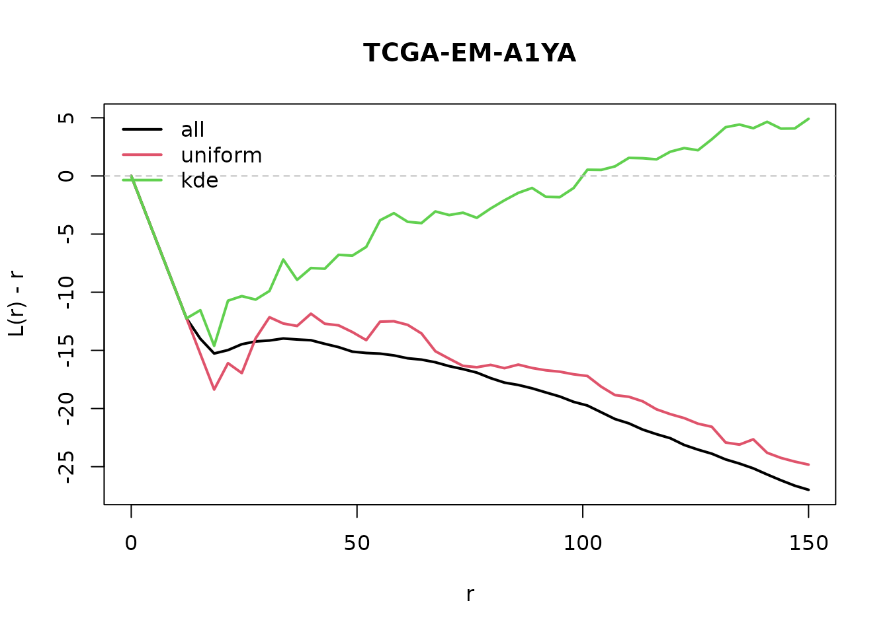

Downsampling
Whole-slide patterns have up to millions of cells, too many for
Lcross. These functions reduce the number of points. All of
them take either n_target (number of points) or
prop (fraction), and return a ppp with the
attribute "downsample" describing what was done.
library(SpaFun)
library(spatstat.geom)
data(tcga_crops)
pp <- tcga_crops[[1]]
pp
#> Marked planar point pattern: 20294 points
#> Multitype, with levels =
#> benign epithelial inflammatory necrotic neoplastic no label stromal
#> window: binary image mask
#> 462 x 462 pixel array (ny, nx)
#> enclosing rectangle: [51732.79, 66513.58] x [14780.797, 29561.593] unitsdownsample
Wrapper: chooses the method with method and accepts a
single ppp or a list of samples. Lists are processed in
parallel with future.apply (choose the backend with
future::plan()); results are reproducible after
set.seed().
With marks only the listed cell types are kept; with
by_marks = TRUE each type is downsampled separately, so
n_target is the number of cells per type.
library(spatstat.random)
#> spatstat.random 3.5-2
set.seed(1)
X <- rpoispp(2000)
Y <- downsample(X, method = "uniform", prop = 0.1)
attr(Y, "downsample")
#> $method
#> [1] "uniform"
#>
#> $n_orig
#> [1] 1971
#>
#> $n_kept
#> [1] 197
# several samples, in parallel
# future::plan(future::multisession, workers = 4)
Xs <- list(a = rpoispp(2000), b = rpoispp(3000))
Ys <- downsample(Xs, method = "window", n_target = 500)
sapply(Ys, spatstat.geom::npoints)
#> a b
#> 505 504downsample_uniform
Uniform random thinning. Independent thinning leaves the K and L
functions (cross-type ones included) unchanged: this is the method to
use before Lcross.
library(spatstat.random)
set.seed(1)
X <- rpoispp(2000)
spatstat.geom::npoints(downsample_uniform(X, n_target = 300))
#> [1] 300downsample_KDE
Sampling with probability proportional to 1 / density.
It makes the pattern more homogeneous, so it changes K
and L: use it for visualisation, not before estimating
Lcross.
The density is computed on a pixel grid and looked up at the points, and the weighted sampling uses the Efraimidis-Spirakis algorithm: half a million points take about a second.
library(spatstat.random)
set.seed(1)
X <- rMatClust(20, 0.05, 100)
Y <- downsample_KDE(X, prop = 0.2)
spatstat.geom::npoints(Y)
#> [1] 453downsample_window
Keeps all the points inside randomly chosen square tiles until
n_target is reached. The window of the result is the union
of the tiles, so edge corrections stay correct; the largest usable
r gets smaller.
library(spatstat.random)
set.seed(1)
X <- rpoispp(2000)
Y <- downsample_window(X, prop = 0.25)
plot(Y)Effect on the L-cross function
On a real crop: the L-cross function between neoplastic and stromal cells on all the cells, after uniform thinning and after KDE downsampling (20% of the cells of each type). Negative values of L(r) - r mean that the two types are segregated. Uniform thinning gives the same curve up to noise; KDE downsampling pushes it towards 0, the value for homogeneous independent patterns, and hides the segregation.
set.seed(1)
pp3 <- tcga_crops[["TCGA-EM-A1YA"]]
r <- seq(0, 150, length.out = 50)
lc <- function(x) {
spatstat.explore::Lcross(x, "neoplastic", "stromal", r = r,
correction = "border")$border
}
pp_uni <- downsample(pp3, "uniform", prop = 0.2, by_marks = TRUE)
pp_kde <- downsample(pp3, "kde", prop = 0.2, by_marks = TRUE)
curves <- cbind(all = lc(pp3), uniform = lc(pp_uni), kde = lc(pp_kde))
matplot(r, curves - r, type = "l", lty = 1, lwd = 2, col = 1:3,
xlab = "r", ylab = "L(r) - r", main = "TCGA-EM-A1YA")
abline(h = 0, lty = 2, col = "grey")
legend("topleft", colnames(curves), col = 1:3, lty = 1, lwd = 2, bty = "n")